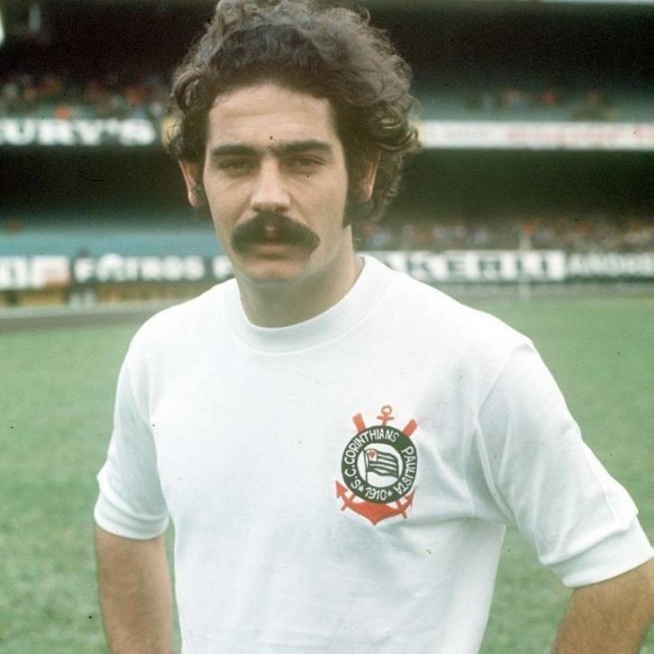

Hino do Time do Povo
Home
Bem-vindo ao nosso site, a casa virtual do Time do Povo!
Somos uma equipe de futebol que carrega consigo uma história de paixão, glórias e um amor incondicional pela camisa. Aqui você encontrará tudo o que precisa saber sobre o nosso clube e sua trajetória vitoriosa.
Navegue pelas páginas e mergulhe no universo do Time do Povo. Conheça nossos títulos conquistados ao longo dos anos, desde os campeonatos estaduais até as taças internacionais. Descubra os heróis que vestiram nosso manto e os momentos inesquecíveis que nos fizeram vibrar de emoção.
Além disso, nosso site é o ponto de encontro perfeito para os Fiéis, a torcida que nos acompanha incansavelmente. Acompanhe as notícias atualizadas, os jogos, os resultados e as entrevistas exclusivas com os jogadores e comissão técnica. Esteja sempre conectado e participe das discussões e debates que fazem parte do mundo do futebol.
Não importa se você está no coração de nossa cidade ou a milhares de quilômetros de distância, aqui você faz parte da família do Time do Povo. Juntos, construímos uma comunidade de apaixonados pelo esporte e pelo nosso clube, unidos por uma só voz.
Aproveite sua visita ao nosso site e sinta-se à vontade para explorar cada seção, descobrindo os detalhes que fazem do Time do Povo um símbolo de tradição e orgulho. Estamos aqui para compartilhar com você nossa história, nossas conquistas e, acima de tudo, a paixão que nos move.
Seja bem-vindo(a) ao mundo do Time do Povo, onde a emoção do futebol ganha vida e a torcida é a força que impulsiona nossos guerreiros em campo. Juntos, somos imparáveis!
Vista o manto, faça parte da história e celebre conosco a grandeza do Time do Povo!
#SomosTimeDoPovo
Principais Jogadores
São inúmeros os jogadores que deixaram sua marca e se tornaram ídolos no coração dos torcedores do Time do Povo. Suas habilidades, dedicação e conquistas são lembradas até hoje, e seu legado perdura como parte fundamental da história do clube.
Desde lendas do passado até os jogadores atuais, todos contribuíram para a grandeza do Time do Povo. Nomes como Zé Maria, um lateral-direito incansável e raçudo, que se tornou um símbolo de garra e determinação dentro de campo.
Zé Maria
Outro jogador icônico é Sócrates, um meio-campista habilidoso e inteligente, que combinava sua técnica refinada com uma postura engajada fora das quatro linhas, sendo uma figura importante na democracia corintiana.

Sócrates
Além disso, Rivelino, um meia canhoto elegante e dono de um futebol refinado, marcou seu nome na história do clube com seus dribles desconcertantes e passes precisos.

Rivelino
Não podemos esquecer de Ronaldo Fenômeno, atacante de classe mundial que encantou os torcedores com sua velocidade, habilidade e faro de gol, levando o Time do Povo a importantes conquistas.
Ronaldo Fenômeno
E, é claro, há os jogadores atuais que estão escrevendo sua própria história no clube, como os artilheiros incansáveis, os defensores sólidos e os meio-campistas criativos, que honram o manto do Time do Povo em cada partida disputada.
Esses são apenas alguns dos jogadores que fizeram e continuam fazendo história no Time do Povo. Cada um deles deixou sua marca, contribuindo para a paixão e o orgulho que envolvem o clube. Seus feitos e talento são eternizados na memória dos torcedores, perpetuando sua importância e influência no legado do Time do Povo.